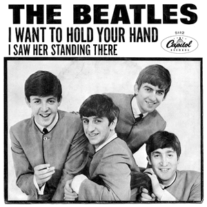
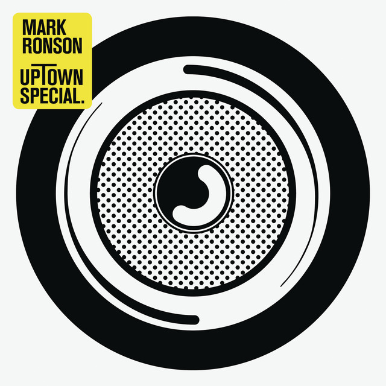

#1
TOP SONGS
BEST POP SONGS OF ALL TIME...
Welcome to the world of Pop music, where catchy tunes, upbeat rhythms,
and relatable lyrics come together to create the ultimate musical experience.
Pop music has been around for decades, and it continues to dominate the airwaves
and charts with its infectious beats and melodic hooks.
From the smooth vocals of Ariana Grande to the dynamic performances of BTS,
Pop music has something for everyone. Whether you're dancing in the club,
singing in the shower, or driving with the windows down,
Pop music is the perfect soundtrack to your life.
So here's are the top pop song lists with high-energy anthems to heartfelt ballads,
these songs will have you tapping your feet, swaying your hips,
and singing your heart out.
· Top 10 Most Commercially Successfull Songs ·
"White Christmas" is a popular Christmas song written by Irving Berlin and first recorded
by Bing Crosby in 1942. It is one of the best-selling singles of all time, with estimated
sales in excess of 50 million copies worldwide.
"White Christmas" became an instant classic upon its release in 1942, and it has remained a
beloved holiday staple ever since. The song's popularity was further solidified by the 1954
film of the same name, which starred Crosby and featured several of his recordings of Christmas
songs, including "White Christmas."
In addition to its commercial success, "White Christmas" has also been recognized with
several prestigious awards. It won the Academy Award for Best Original Song in 1942,
and it has been inducted into the Grammy Hall of Fame and the National Recording Registry.
Overall, "White Christmas" is a timeless holiday pop classic that continues to be enjoyed by
audiences around the world every holiday season.
#2
Something About the Way You Look Tonight
by Elton John
Over 33 million copies sold worldwide
"Something About the Way You Look Tonight" is a song by British musician Elton John,
released as a double A-side single with "Candle in the Wind 1997" in 1997. The song
was written by Elton John and his longtime collaborator, lyricist Bernie Taupin. It
went on to become one of Elton John's biggest hits, reaching number one on the UK
Singles Chart and the Billboard Hot 100 in the United States.
"Something About the Way You Look Tonight" was originally written for a friend's
wedding, but it quickly became clear that it had hit potential. In addition to
its commercial success, the song was also critically acclaimed, winning the 1998
Grammy Award for Best Male Pop Vocal Performance.
Overall, "Something About the Way You Look Tonight" is a timeless classic that
showcases Elton John's songwriting and performing abilities, as well as his
enduring popularity with audiences around the world.
#3
Rock Around the Clock
by Bill Haley & His Comets
Over 25 million copies sold worldwide
"Rock Around the Clock" is a seminal rock and roll song by Bill Haley & His Comets, released
in 1954. It is widely considered one of the most important and influential songs in the history
of rock and roll.
The song was written by Max C. Freedman and James E. Myers, and was recorded by Bill Haley &
His Comets on April 12, 1954. The song was first released as a B-side to "Thirteen Women
(And Only One Man in Town)," but it quickly became the more popular of the two songs.
The song has been covered by numerous artists over the years, and it remains a beloved classic
of rock and roll music.
In addition to its musical influence, "Rock Around the Clock" also had a significant impact on
popular culture. The song became a symbol of teenage rebellion and youthful exuberance, and it
helped to establish rock and roll as a cultural force.
Overall, "Rock Around the Clock" is a groundbreaking and influential song that helped to shape
the course of popular music and culture in the 20th century.
#4
I Will Always Love You
by Whitney Houston
Over 20 million copies sold worldwide
"I Will Always Love You" is a powerful ballad originally written and recorded by American
singer-songwriter Dolly Parton in 1974. However, it was Whitney Houston's version of the
song that propelled it to worldwide fame and became one of the most iconic songs of all time.
Houston's version of "I Will Always Love You" was recorded for the soundtrack of the 1992
romantic drama film "The Bodyguard," in which she starred alongside Kevin Costner. The
song was released as a single on November 3, 1992, and quickly became a commercial success,
reaching the top of the charts in multiple countries and earning Houston numerous accolades,
including two Grammy Awards.
Overall, "I Will Always Love You" remains a beloved and timeless classic, and Whitney
Houston's version of the song continues to inspire and move listeners to this day.
#5
It's Now or Never
by Elvis Presley
Over 10 million copies sold worldwide
"It's Now or Never" is a popular song recorded by Elvis Presley in 1960. The song was written
by Aaron Schroeder and Wally Gold, with lyrics by Wally Gold and published by RCA Victor.
It was recorded at RCA Studios in Nashville, Tennessee, and released as a single in July 1960.
The song became an instant hit, reaching number one on the U.S. Billboard Hot 100 chart
and the UK Singles Chart.
Since its release, "It's Now or Never" has become a beloved classic, and has been covered by
numerous artists across a wide range of genres. It has been featured in films, television shows,
and commercials, and has been recognized as one of the most enduring and iconic pop songs.
Overall, "It's Now or Never" is a timeless classic that showcases Elvis Presley's incredible
talent and enduring legacy as one of the greatest singers of all time. Its sweeping melody,
powerful lyrics, and emotive performance make it a must-listen for fans of early rock and
roll and romantic ballads alike.
#6

I Want to Hold Your Hand
by The Beatles
Over 12 million copies sold worldwide
"I Want to Hold Your Hand" is a classic love song performed by the legendary British band The Beatles.
The song was written by John Lennon and Paul McCartney and was released in 1963 as a single,
marking the beginning of their rise to fame in the United States.
The song was a massive commercial success, topping the charts in both the UK and US, and becoming
one of the best-selling singles of all time. Its popularity and cultural impact have endured over
the decades, and it remains a beloved classic in The Beatles' catalog.
Overall, "I Want to Hold Your Hand" is a timeless love song that showcases The Beatles' signature
sound and songwriting abilities. Its catchy melody, memorable lyrics, and innovative production have
helped make it a pop music classic.
#7

Hey Jude
by The Beatles
Over 10 million copies sold worldwide
"Hey Jude" is a song by the legendary English rock band The Beatles. It was written by Paul
McCartney and released in August 1968 as a single with "Revolution" as the B-side. The song's
production was overseen by Beatles producer George Martin. The song was recorded in a single take
with a massive choir and orchestra, giving it a grand and powerful sound.
"Hey Jude" has been covered by numerous artists over the years and has become a cultural
touchstone. It has been inducted into the Grammy Hall of Fame and was ranked number eight
on Rolling Stone's list of the 500 Greatest Songs of All Time.
Overall, "Hey Jude" is a timeless classic that showcases The Beatles' songwriting and musical
prowess and continues to inspire and captivate audiences more than 50 years after its release.
#8
Everything I Do (I Do It for You)
by Bryan Adams
Over 8 million copies sold worldwide
"Everything I Do (I Do It for You)" is a power ballad song performed by Canadian singer-songwriter Bryan Adams.
The song was released on June 18, 1991, as a single from the soundtrack of the film "Robin Hood: Prince of
Thieves." It was written by Adams, Michael Kamen, and Robert John "Mutt" Lange.
The song became an instant hit, reaching number one on the charts in multiple countries, including the United States,
Canada, and the United Kingdom. It also won a Grammy Award for Best Song Written Specifically for a Motion Picture or for Television.
"Everything I Do (I Do It for You)" remains one of Adams' most popular and enduring songs, and has been
covered by numerous artists over the years. Its popularity has also led to its inclusion in various films,
television shows, and commercials, cementing its status as a classic love song.
#9
Physical
by Olivia Newton-John
Over 10 million copies sold worldwide
"Physical" is a hit song performed by Australian singer Olivia Newton-John, released in 1981 as the
lead single from her twelfth studio album of the same name. The song was written by Steve Kipner
and Terry Shaddick, and produced by John Farrar.
The song was a massive commercial success, spending ten weeks at number one on the US Billboard
Hot 100 chart and becoming one of the biggest hits of the 1980s. It also topped the charts in
Canada and Australia, and reached the top ten in several other countries.
Despite its commercial success, "Physical" also generated controversy at the time for its overtly
sexual lyrics and imagery, which some critics felt were inappropriate for a mainstream pop song.
However, the song's popularity and enduring legacy have ensured that it remains a beloved
classic of 1980s pop music to this day.
#10
You Light Up My Life
by Debby Boone
Over 7 million copies sold worldwide
"You Light Up My Life" is a song originally composed by Joseph Brooks for the film of the same
name in 1977. The song was performed by Kasey Cisyk in the film and was later re-recorded by Debby
Boone, who released it as a single in the same year. The song became a huge hit, spending ten
consecutive weeks at number one on the Billboard Hot 100 chart and earning Boone a Grammy Award
for Best New Artist in 1978.
Despite its success, the song and its composer, Joseph Brooks, were later the subject of controversy
when Brooks was accused of multiple counts of sexual assault and harassment. He was convicted of rape
in 2009 and committed suicide in 2011 while awaiting sentencing.
Despite the controversy, "You Light Up My Life" remains a beloved classic and a staple of pop songs and romantic
ballads. Its enduring popularity is a testament to the power of its message and the beauty of
Debby Boone's performance.
· Top 10 Most Listened To Songs ·
#1

Shape of You
by Ed Sheeran
Over 4.8 billion streams on Spotify alone
"Shape of You" is a song by English singer-songwriter Ed Sheeran. It was released as a digital download
on January 6, 2017, as one of the lead singles from his third studio album "÷" (pronounced "divide").
The song was written by Sheeran, Steve Mac, and Johnny McDaid, and produced by Sheeran and Mac.
"Shape of You" was a commercial success, topping the charts in over 30 countries, including the US
Billboard Hot 100, the UK Singles Chart, and the Australian ARIA chart. It was also the best-selling
song of 2017 worldwide. The song has been certified Diamond in the US, meaning it has sold over 10 million units.
The song has been covered by many artists and has also been parodied in various ways. It has been
praised for its catchy melody and upbeat production. Overall, "Shape of You" remains one of
Ed Sheeran's most popular and recognizable songs.
#2
Despacito
by Luis Fonsi ft. Daddy Yankee
Over 7.5 billion streams on Spotify alone
"Despacito" is a Spanish-language reggaeton song recorded by Puerto Rican singer Luis Fonsi, featuring Puerto
Rican rapper Daddy Yankee. The song was written by Luis Fonsi, Daddy Yankee, Erika Ender, and produced by
Andrés Torres and Mauricio Rengifo.
The song was released on January 13, 2017, and quickly became a global phenomenon, topping charts in over
40 countries, including the United States, where it spent 16 consecutive weeks at number one on the Billboard
Hot 100 chart. It became the first song primarily in Spanish to top the chart since the "Macarena" in 1996.
The success of "Despacito" has been attributed to its catchy melody, infectious beat, and crossover
appeal, as it successfully blends Latin rhythms with pop sensibilities. It has become a cultural phenomenon,
spawning countless covers, parodies, and remixes, including a popular remix featuring Justin Bieber.
Overall, "Despacito" has been a huge success, breaking records and crossing cultural barriers
to become one of the most popular songs of all time.
#3

Uptown Funk
by Mark Ronson ft. Bruno Mars
Over 4.2 billion streams on Spotify alone
"Uptown Funk" is a hit single by English producer Mark Ronson, featuring American singer Bruno Mars.
The song was released on November 10, 2014, as the lead single from Ronson's fourth studio album,
"Uptown Special." It became a massive commercial success, peaking at number one in several countries,
including the United States, the United Kingdom, Australia, Canada, and many others.
The song was written by Mark Ronson, Bruno Mars, Philip Lawrence, Jeff Bhasker, and Nicholas Williams.
It has a retro-inspired funk and R&B sound, with influences from 1980s electro-funk and early 1990s
hip-hop. The track features a horn section, funky bassline, and a catchy chorus that pays tribute
to the classic funk and soul of the 1970s.
"Uptown Funk" won numerous awards, including Record of the Year and Best Pop Duo/Group Performance
at the 58th Annual Grammy Awards. It also received critical acclaim for its infectious melody, slick
production, and Bruno Mars' impressive vocal performance.
Overall, "Uptown Funk" is a timeless party anthem that continues to be a favorite of fans around
the world. Its funky sound, catchy chorus, and energetic performance make it a classic of modern pop music.
#4
Thinking Out Loud
by Ed Sheeran
Over 3.8 billion streams on Spotify alone
"Thinking Out Loud" is a popular song by British singer-songwriter Ed Sheeran. It was released
in 2014 as part of his album "X" and quickly became a hit, reaching the top of the charts in
several countries, including the UK and the US. The music video alone has been viewed over
3 billion times on YouTube, making it one of the most-watched music videos of all time.
The song has a slow and romantic feel, with Sheeran's signature acoustic guitar and heartfelt
vocals. It's a love song that celebrates the idea of growing old together with someone you love,
and cherishing each other's company even as the years go by.
"Thinking Out Loud" has been praised for its timeless appeal and its ability to connect with
people of all ages and backgrounds. It has won several awards, including the Grammy Award for
Song of the Year in 2016, and continues to be a beloved and frequently requested song for
weddings, proms, and other romantic occasions.
#5

Sorry
by Justin Bieber
Over 3.5 billion streams on Spotify alone
"Sorry" is a hit song by Canadian singer Justin Bieber, released on October 23, 2015, as
the second single from his fourth studio album, "Purpose." The song was produced by Skrillex
and BloodPop and written by Bieber, Julia Michaels, Justin Tranter, and Michael Tucker.
"Sorry" was a commercial success, topping the charts in several countries, including the United
States, Canada, and the United Kingdom. The music video for the song, which features a group of
female dancers, has also been a massive hit, with over 4 billion views on YouTube as of 2021.
Critics praised "Sorry" for its catchy melody, infectious beats, and Bieber's vocal performance.
The song has been nominated for several awards, including Song of the Year at the 2017 Grammy Awards.
Overall, "Sorry" is a hit song by Justin Bieber that showcases his growth as an artist,
both musically and lyrically. The song's catchy melody, infectious beats, and memorable chorus
have made it a pop culture phenomenon, and its commercial success has solidified Bieber's
place as one of the biggest pop stars of his generation.
#6

Closer
by The Chainsmokers ft. Halsey
Over 3.3 billion streams on Spotify alone
"Closer" is a popular song by American electronic music duo The Chainsmokers, featuring American
singer Halsey. The song was released on July 29, 2016, and quickly became a huge commercial success,
reaching the top of the charts in multiple countries, including the United States,
the United Kingdom, and Australia.
The song's catchy chorus and memorable lyrics quickly caught on with audiences, making it a
viral hit. It went on to become one of the best-selling songs of the year and was nominated
for several awards, including a Grammy Award for Best Pop Duo/Group Performance.
In addition to its commercial success, "Closer" also helped to cement The Chainsmokers' status
as one of the biggest names in electronic dance music, and it helped to launch Halsey's career
as a mainstream pop artist.
Overall, "Closer" is a catchy and memorable song that showcases The Chainsmokers' talent for
creating infectious electronic pop anthems. Its success has had a significant impact on the
pop music landscape and has helped to define the sound of contemporary EDM-pop.
#7

Roar
by Katy Perry
Over 3.1 billion streams on Spotify alone
"Roar" is a song by American singer Katy Perry, released as the lead single from her fourth studio
album, "Prism" in 2013. The song was co-written by Perry, along with Max Martin, Bonnie McKee,
Dr. Luke, and Cirkut, with production being handled by Martin, Dr. Luke, and Cirkut.
Upon its release, "Roar" was an instant commercial success, topping the charts in numerous
countries, including the US Billboard Hot 100, and earning Perry her eighth number-one
single on that chart. The music video alone has been viewed over 3.5
billion times on YouTube, making it one of the most-watched music videos of all time.
Overall, "Roar" has become one of Katy Perry's most iconic and beloved songs, cementing her
status as one of the biggest pop stars of her generation. Its positive message of
self-empowerment has resonated with audiences around the world, making it a cultural
touchstone that continues to inspire listeners to this day.
#8
One Dance
by Drake ft. WizKid and Kyla
Over 2.9 billion streams on Spotify alone
"One Dance" is a song by Canadian rapper Drake, featuring Nigerian singer WizKid and British
singer Kyla. It was released on April 5, 2016, as the second single from Drake's fourth studio
album, "Views." The song is an uptempo dancehall and Afrobeat track, with a catchy hook
and rhythmic beats that make it a club favorite.
"One Dance" was a massive commercial success, reaching number one on the charts in multiple
countries, including the US, UK, Canada, and Australia. It also broke several streaming records,
becoming the first song to reach one billion streams on Spotify. The song's popularity was further
boosted by its use in various TikTok dance challenges, which helped to popularize the
track among a younger generation.
Overall, "One Dance" is a standout track in Drake's discography, showcasing his ability to blend
different genres and create music that appeals to a wide range of audiences. With its infectious
beat and memorable hook, the song remains a favorite among fans and continues to be played
at clubs and parties around the world.
#9
Counting Stars
by OneRepublic
Over 2.8 billion streams on Spotify alone
"Counting Stars" is a popular song by American pop rock band OneRepublic. It was released on
June 14, 2013, as the lead single from their third studio album, "Native." The song was written
by Ryan Tedder, the lead vocalist of OneRepublic, along with other band members and Brent Kutzle.
It was produced by Tedder and Noel Zancanella.
The track received widespread commercial success, reaching the top ten on the charts in over twenty
countries, including the United States, the United Kingdom, Australia, and Canada. It also became
one of the best-selling singles of all time, with over 20 million copies sold worldwide.
Overall, "Counting Stars" is an upbeat and catchy song that showcases OneRepublic's unique sound
and musical style. Its success cemented the band's place in the mainstream music scene and
solidified their reputation as one of the most successful pop rock bands of the 21st century.
#10
Don't Stop Believin
by Journey
Over 1.7 billion streams on Spotify alone
"Don't Stop Believin'" is a classic rock anthem originally recorded by the American rock band Journey.
The song was released on their 1981 album "Escape" and has since become one of their most iconic
and recognizable tracks.The song was written by Journey's keyboardist Jonathan Cain, guitarist Neal Schon, and lead singer
Steve Perry.
"Don't Stop Believin'" has become a cultural phenomenon since its release, with its catchy melody
and inspiring lyrics resonating with people across generations. The song has been covered by numerous
artists and has been used in several movies, TV shows, and commercials.
In recent years, the song has gained renewed popularity thanks to its use in the hit TV show "Glee,"
which featured a memorable cover of the song in its pilot episode. The song has also been used in
the final scene of the popular HBO show "The Sopranos," making it an even more iconic part of
American pop culture.
Overall, "Don't Stop Believin'" remains one of Journey's most enduring and beloved songs,
inspiring listeners to keep pushing forward and chasing their dreams.
◬
©2023 BEATZz